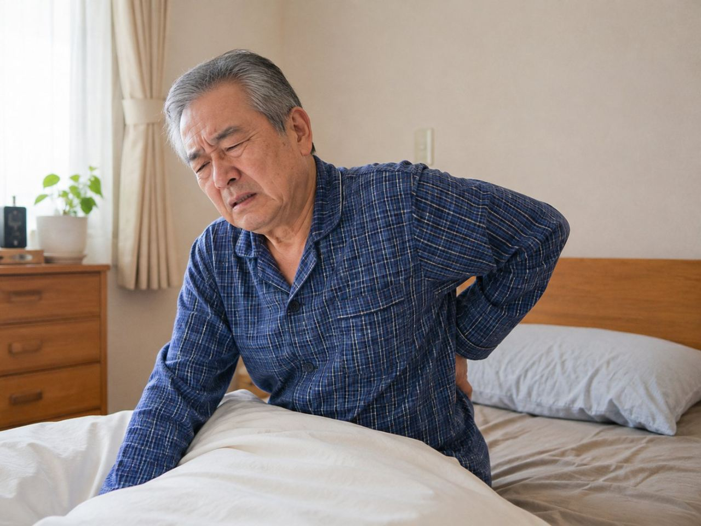

歩くのが遅くなった、手すりがないと階段がこわい、ペットボトルのふたが開けにくい。加齢で筋力や体力が落ちてくると、こうした小さな変化が積み重なっていきます。筋肉が減るサルコペニア、立つ・歩くといった運動器の力が衰えるロコモは、その先にあるものです。どちらも予防の基本は運動と栄養で、背景に病気があれば医療機関での受診が主になります。のびのび訪問施術院は、通院がむずかしい方のお住まいへ国家資格者がうかがう訪問の施術院です。鍼やお灸、手で行うケアは、痛みやこわばりをやわらげ、動きやすい状態を保つ補助として引き受けます。
かいつまんで言うと、サルコペニア（筋肉量の減少）やロコモ（運動器の衰え）は、体を動かす機会を保つことで進みをゆるやかにできます。予防の柱は運動と栄養で、背景に病気が疑われるときは医療機関の受診が主です。急に体重が減った・転倒が増えた・立てなくなったといったときは、早めに受診やご相談を。訪問鍼灸マッサージは、こわばりや痛みをやわらげ動きやすさを保つ補助です。費用は1回3,950円、1割負担約395円。出張費は一律かからず、医師の同意書でご自宅に伺います。
サルコペニアとロコモは、どう違いますか
サルコペニアは、加齢や活動量の低下によって全身の筋肉が減り、力が入りにくくなる状態です。一方ロコモティブシンドローム（ロコモ）は、骨や関節、筋肉といった『体を動かす仕組み』全体が衰えて、立つ・歩くといった移動の動作がむずかしくなる状態を指します。筋肉に注目したのがサルコペニア、移動する力に注目したのがロコモ、とイメージすると分かりやすいかもしれません。そのさらに手前で心身が弱ってきた段階が『フレイル』です。
三つに共通するのは、ある日いきなり動けなくなるわけではない、という点です。ですから、小さな変化に早く気づき、動く力を保つ手立てを始めることに意味があります。予防の柱となるのは、体を動かすことと、しっかり栄養をとること。低栄養が進むと筋肉はさらに落ちやすくなります。フレイルや低栄養のことは低栄養・フレイル予防もあわせてご覧ください。在宅ケア全般については総合ガイドもご参考になります。
こんなときは、まず医療機関にご相談を
筋力や体力の低下がゆるやかに進むのはよくあることですが、なかには早めの受診が必要なサインもあります。急に体重が減ってきた、転倒する回数が増えた、これまで立てていたのに立てなくなった、握力や歩く速さが急に落ちたといったときは、背景に別の病気が隠れていることがあります。まずはかかりつけの医師にご相談ください。
また、急な手足の脱力やしびれ、呂律が回らない、強い痛みや発熱をともなうときは、ためらわず受診してください。サルコペニアやロコモの予防はあくまで運動と栄養が基本で、病気が疑われるときの診断と治療は医療機関が主役です。鍼灸マッサージは、こうした医療的な確認を土台に、動きやすさを支える補助の役目を担います。
少し動かないだけで、なぜ筋肉は落ちるのか
筋肉は、使わない期間が続くと思いのほか早くやせていきます。ご高齢の方の場合、数日から数週間ほとんど体を動かさなかっただけでも力が落ちやすく、いったん落ちた力を取り戻すには何倍もの時間がかかるといわれます。風邪や入院で少し寝込んだあと急に足腰が弱ったように感じるのは、このためです。
やっかいなのは、痛みやこわばりがあると動くこと自体がおっくうになる点です。動かない、だから筋力が落ちる、するとますます動きにくくなる。この下り坂のような流れを、どこかで止めてあげることが、在宅でのケアがめざすところです。
痛みをかばう動きが、全身のバランスをくずす
膝や腰、股関節などに慢性的な痛みがあると、その部分をかばう動き方が身についていきます。かばう姿勢が続けば、反対側の脚や別の関節に思わぬ負担がかかり、体全体の使い方がゆがんでいきます。片方の膝の痛みでうかがったときに、体全体を見ていくなかで反対側の脚の筋力が落ちていることに先に気づく、といったこともあります。
痛む所だけでなく全身に目を配れるのは、生活の場に上がりこむ訪問だからこそです。骨折などで動けない時期が続くと、使わない部分の力が急に落ちる廃用症候群も心配になります。その予防やケアについては骨折後の廃用症候群もあわせてご覧ください。まずは痛みとこわばりをやわらげ、体を動かしやすい状態に戻すことが、その後のケアの入り口になります。
はじめに確かめるのは、痛む場所だけではありません
ご自宅にうかがってまず見せていただくのは、痛む一点だけではありません。どの動きでどこがつらくなるのか、立ち上がりや歩き出しでどこに力が入りにくいのか、体のどこが固まっているのか。ふだんの暮らしのなかでの動き方をたどりながら、その方の体の全体像を組み立てます。
同じ『歩きにくい』でも、痛みが原因の方、こわばりが強い方、筋力の低下が前面に出ている方では、必要な手立てはまるで違います。その見立てをもとに、鍼やお灸、手で行うケア、無理のない範囲で体を動かす練習を、その方だけの組み合わせに整えていきます。効果の感じ方には個人差がありますので、あせらず進めます。
鍼やお灸で、動く意欲を取り戻すきっかけを
鍼やお灸には、こわばった筋肉をやわらげ、血のめぐりを促し、痛みを軽くする働きが期待できます。痛みが引いてくると、体を動かすことへのためらいが小さくなり、『もう少し動いてみようか』という気持ちにつながります。この意欲そのものを引き出すことが、筋肉を保つ第一歩になります。
のびのび訪問施術院で保険を使って行うのは鍼やお灸による施術です。そこに、手で筋肉をほぐす、関節をやさしく動かす、負担にならない範囲で体を動かすといったケアを、施術に含めて重ねています。これらについて別途の料金はいただきません。ただし鍼灸で筋肉そのものが増えるわけではなく、動きやすくして運動や栄養と組み合わせることが大切です。
座ったままでもできる、筋肉を保つ習慣
施術の日以外にも、家でできることがあります。座ったままでも、かかとの上げ下げや太ももを軽く持ち上げる動きなら、テレビを見ながら続けられます。立てる方なら、テーブルに手を添えての立ち座りをくり返すだけでも脚の力を保つ助けになります。はじめは持ち上げにくかった足が、続けるうちに動かしやすくなったと話される方もいます。感じ方には個人差があります。
コツは、頑張りすぎず細く長く続けることです。あわせて、筋肉のもとになるたんぱく質をとること、しっかり眠って体を回復させることも土台になります。食が細くなって低栄養が進むと、いくら動いても筋肉は保ちにくくなります。痛みで眠りが浅い状態が続くと、体を立て直す時間そのものが足りなくなります。こわばりをゆるめておくことは、筋肉を保つ土台を支えることにもつながります。
通うより、来てもらうという発想
体を動かす機会が大切だとわかっていても、痛みや足腰の衰えで通院そのものが重荷になっている方が多くおられます。出かけるだけでへとへとになり、かえって動く気力までしぼんでしまっては本末転倒です。訪問という形なら、通う負担をかけずに暮らし慣れた家でケアを受けられます。
移動に体力を使わないぶん、力をケアそのものに向けられますし、ご家族が付き添いのために予定を空けずにすむ場合もあります。『通う』のではなく『来てもらう』。それが、動きにくい方には自然な選び方です。
保険で受けると、1回約395円から
のびのび訪問施術院の施術は、医師の同意にもとづいて医療保険（療養費）が使えます。1回の施術は総額3,950円で、自己負担が1割の方なら約395円です。値引きではなく、公的な医療保険で定められた正しい料金です。別途の出張費や交通費は、対応エリア内であれば一律かかりません（料金に含みます）。ほかの負担割合の方の金額は料金の記事をご覧ください。
しかもこの費用は介護保険の区分支給限度額とは別の枠で使えるため、デイサービスやヘルパーをすでに利用している方でも、その枠を減らすことなく受けられます。週2回のペースなら、ひと月の自己負担はおよそ3,160円ほど（1割の方）です。月ごとに明細をお渡しし、内訳を確かめていただけます。料金の詳しい内訳は料金のページでご確認いただけます。限度額との関係は医療保険と介護保険の違いに書いています。
対象になる方と、相談の始め方
対象になるのは、慢性的な痛みやしびれ、こわばりなどがあって医師が治療の必要を認めた方で、なおかつ通院がむずかしい方です。サルコペニアやロコモという状態そのものではなく、それにともなう痛みやこわばりについて医師が必要と認めた場合に、保険の対象になります。要介護認定は受けていなくても大丈夫ですが、医師の同意書が必要です。
同意書の手続きは当院が進めますので、何から手をつければよいかわからなくても心配はいりません。足腰の衰えや痛みが気になり始めた方、ご家族の動きにくさが心配な方は、どうぞお気軽にお問い合わせください。まずは体の状態を見せていただき、対象になるかどうかも含めてご説明します。
よくある質問
サルコペニアやロコモそのものは、保険の対象になりますか？
状態そのものではなく、それにともなう慢性的な痛みやしびれ、こわばりなどで医師が治療の必要を認めた場合に、鍼やお灸による施術が保険の対象になります。まずは体の状態を見せていただき、対象になるかも含めてご説明します。
サルコペニアで、鍼灸をすれば筋肉は増えますか？
鍼灸で筋肉そのものが増えるわけではありません。こわばりや痛みをやわらげて動きやすくし、無理のない運動やたんぱく質を中心とした栄養と組み合わせていくことが大切です。効果には個人差があります。
筋力が落ちてきた家族に、訪問は役立ちますか？
こわばりをやわらげ、動きやすさを支えることで、体を動かすきっかけづくりのお手伝いができます。家でできる簡単な運動や栄養のとり方もお伝えします。ただし予防の基本は運動と栄養で、病気が疑われるときは受診が主です。
筋力低下でも保険で受けられますか？
筋力低下にともなう慢性的なこわばりや痛みについて医師が必要と認め、通院がむずかしい場合は、対象になることがあります。医師の同意書が必要です。まずはご相談ください。
どんなときに受診したほうがよいですか？
急に体重が減った、転倒が増えた、立てなくなった、握力や歩く速さが急に落ちたといったときは、背景の病気が隠れていることがあります。まずはかかりつけの医師にご相談ください。
料金はいくらですか？
1回の総額は3,950円、自己負担は1割の方で約395円です。別途の出張費はエリア内一律かからず、料金に含みます。介護保険の区分支給限度額とは別枠で受けられます。
介護保険を使っていなくても受けられますか？
要介護認定は不要です。介護保険の区分支給限度額とは別枠で、医師の同意書があればご利用いただけます。すでにデイサービスやヘルパーを利用中の方も、その枠を減らさず受けられます。
寝たきりに近い状態でも受けられますか？
はい、横になったままでも受けられます。無理に起こしたり動かしたりはせず、その方の体調とできる範囲に合わせて、鍼やお灸、やさしい手技で体をととのえます。こわばりをやわらげ動かせる範囲を保つことは、日々のケアの負担を軽くすることにもつながります。

訪問マッサージ・訪問鍼灸の料金はいくら？保険なら1回約395円から続けられます
続きを読む
訪問鍼灸マッサージはどこまで来てもらえる？対応エリアと範囲をわかりやすく
続きを読む
デイサービスを嫌がる親に、自宅で受けられるケアという選択肢
続きを読む
症状が落ち着いたらやめられる？訪問鍼灸マッサージを続ける期間の考え方
続きを読む
腰椎椎間板ヘルニアの足の痛み・しびれ｜高齢者の在宅ケアと訪問鍼灸
続きを読む